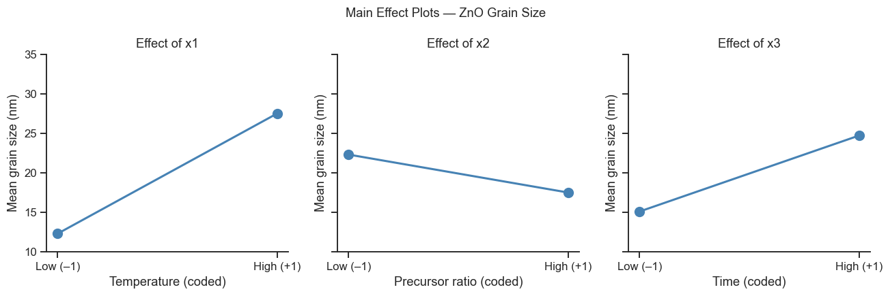
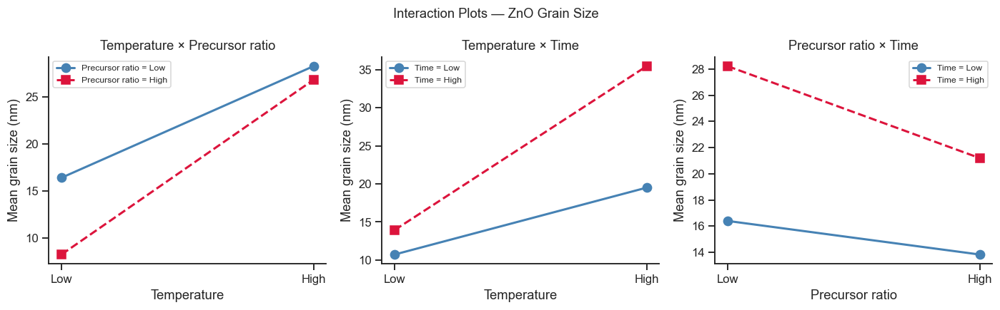
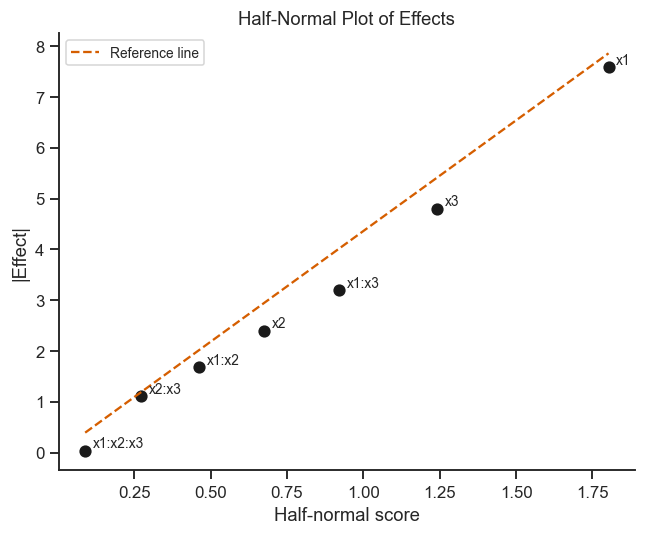

17. Full Factorial Designs#
A 2ᵏ full factorial explores all combinations of k factors at two levels (low = –1, high = +1). With k=2, this gives 4 runs; with k=3, 8 runs.
Main effects and all interaction effects can be estimated unambiguously.
Topics
2² and 2³ design matrices with pyDOE3
Main effects and two-factor interactions
ANOVA on factorial data
Effect plots and interaction plots
Half-normal plot for significance screening
Case study: ZnO nanoparticle synthesis — grain size response
import numpy as np
import pandas as pd
import matplotlib.pyplot as plt
import seaborn as sns
import pyDOE3
import statsmodels.formula.api as smf
import statsmodels.api as sm
from scipy import stats
sns.set_theme(style='ticks', palette='colorblind')
plt.rcParams.update({'figure.dpi': 110, 'font.size': 11})
rng = np.random.default_rng(42)
17.1 Generating a 2² Design Matrix#
A design matrix is just a table listing every combination of low (–1)
and high (+1) settings that the experiment will run — one row per
experiment. For 2 factors there are \(2^2=4\) possible high/low combinations,
so the table has 4 rows. pyDOE3.ff2n(k) builds this table automatically so
you never have to enumerate combinations by hand (and never accidentally
repeat or miss one). Once generated in coded form, we translate each column
back to the real, natural units of the experiment (°C, molar ratio, etc.) so
the table can be handed directly to whoever runs the synthesis.
# 2² design in coded (−1, +1) form
design_2k = pyDOE3.ff2n(2)
df_design = pd.DataFrame(design_2k, columns=['x1', 'x2'])
# Natural factor ranges
# x1 = Temperature 500–700 °C (centre 600)
# x2 = Precursor ratio 1:2 to 1:6 (centre 1:4)
df_design['T_C'] = 600 + 100 * df_design['x1']
df_design['Precursor_ratio'] = 4 + 2 * df_design['x2']
print('2² design matrix:')
print(df_design.to_string(index=False))
2² design matrix:
x1 x2 T_C Precursor_ratio
-1.0 -1.0 500.0 2.0
-1.0 1.0 500.0 6.0
1.0 -1.0 700.0 2.0
1.0 1.0 700.0 6.0
17.2 2³ Full Factorial — ZnO Grain Size Experiment#
Three factors, each at two levels, gives \(2^3=8\) combinations — the full factorial from Section 1 of the theory page. This example asks: of temperature, precursor ratio, and calcination time, which ones actually control the final grain size, and do any of them interact?
Three factors:
x1: Sintering temperature (500 / 700 °C)
x2: Precursor ratio (1:2 / 1:6)
x3: Calcination time (1 / 4 h)
Response: mean grain size d (nm) measured by XRD (Scherrer equation).
The code below simulates data from a “true” (but in reality unknown) model of
how grain size depends on the three factors, including some interaction
terms — this lets us check afterwards whether the fitting procedure
correctly recovers the effects we built in. Each design point is also run in
duplicate (n_reps = 2): repeating runs lets us estimate how much
random noise (measurement + process variability) is present, which is
needed later to judge whether an effect is genuinely real or just noise.
n_reps = 2 # two replicates per design point
design_3 = pyDOE3.ff2n(3)
# True effects (coded scale): intercept=20, T=+8, ratio=–3, time=+5,
# T×ratio=+2, T×time=+3, ratio×time=–1, 3FI≈0
def grain_size(x1, x2, x3, noise_std=1.5):
return (20
+ 8*x1 - 3*x2 + 5*x3
+ 2*x1*x2 + 3*x1*x3 - 1*x2*x3
+ 0.5*x1*x2*x3
+ rng.normal(0, noise_std))
rows = []
for _ in range(n_reps):
for row in design_3:
x1, x2, x3 = row
d = grain_size(x1, x2, x3)
rows.append({'x1': x1, 'x2': x2, 'x3': x3, 'grain_size': d})
df_3k = pd.DataFrame(rows)
# Add natural units
df_3k['T_C'] = 600 + 100*df_3k['x1']
df_3k['ratio'] = 4 + 2*df_3k['x2']
df_3k['time_h'] = 2.5 + 1.5*df_3k['x3']
print(f'Total runs: {len(df_3k)} (2³ × {n_reps} replicates)')
print(df_3k.head(8).to_string(index=False))
Total runs: 16 (2³ × 2 replicates)
x1 x2 x3 grain_size T_C ratio time_h
-1.0 -1.0 -1.0 13.957076 500.0 2.0 1.0
-1.0 -1.0 1.0 18.940024 500.0 2.0 4.0
-1.0 1.0 -1.0 7.625677 500.0 6.0 1.0
-1.0 1.0 1.0 8.910847 500.0 6.0 4.0
1.0 -1.0 -1.0 17.573447 700.0 2.0 1.0
1.0 -1.0 1.0 35.546731 700.0 2.0 4.0
1.0 1.0 -1.0 19.691761 700.0 6.0 1.0
1.0 1.0 1.0 34.025636 700.0 6.0 4.0
17.3 Main Effects and Interactions#
We now fit a regression model — the same linear-model machinery from Part II’s regression notebook — to estimate every main effect and interaction from the 16 grain-size measurements (8 design points × 2 replicates). Because the factors are coded ±1 and the design is balanced (Section 1 of the theory page), each coefficient below is a clean, independent estimate of one effect: it is not distorted by the other factors.
When you look at the summary table, three columns matter most for a first read:
coef — the estimated effect. For a main effect, this is half the change in grain size when that factor moves from low to high (the regression coefficient of a ±1-coded variable is exactly half the “high minus low” effect used elsewhere in DoE). Its sign tells you the direction (does grain size go up or down with this factor?) and its size tells you how much it matters relative to the other rows. Interaction rows (e.g.
x1:x2) work the same way, but describe how much the effect of one factor changes depending on the level of the other.P>|t| — the p-value for that coefficient (see Part III’s hypothesis testing notebook for the full explanation). As a rule of thumb: a p-value below 0.05 means the effect is unlikely to be explained by chance noise alone, and is worth taking seriously; a p-value well above 0.05 means the data cannot distinguish that effect from zero.
R-squared (near the top of the output) — the fraction of the variation in grain size that this model explains overall; closer to 1 is better.
# Fit model with all main effects and 2FI
model = smf.ols(
'grain_size ~ x1 + x2 + x3 + x1:x2 + x1:x3 + x2:x3 + x1:x2:x3',
data=df_3k
).fit()
print(model.summary())
OLS Regression Results
==============================================================================
Dep. Variable: grain_size R-squared: 0.993
Model: OLS Adj. R-squared: 0.986
Method: Least Squares F-statistic: 154.8
Date: Tue, 01 Sep 2026 Prob (F-statistic): 6.67e-08
Time: 17:42:46 Log-Likelihood: -20.323
No. Observations: 16 AIC: 56.65
Df Residuals: 8 BIC: 62.83
Df Model: 7
Covariance Type: nonrobust
==============================================================================
coef std err t P>|t| [0.025 0.975]
------------------------------------------------------------------------------
Intercept 19.9159 0.305 65.365 0.000 19.213 20.619
x1 7.5891 0.305 24.908 0.000 6.886 8.292
x2 -2.3969 0.305 -7.867 0.000 -3.100 -1.694
x3 4.7981 0.305 15.748 0.000 4.096 5.501
x1:x2 1.6744 0.305 5.495 0.001 0.972 2.377
x1:x3 3.1905 0.305 10.471 0.000 2.488 3.893
x2:x3 -1.1136 0.305 -3.655 0.006 -1.816 -0.411
x1:x2:x3 -0.0391 0.305 -0.128 0.901 -0.742 0.664
==============================================================================
Omnibus: 1.791 Durbin-Watson: 1.021
Prob(Omnibus): 0.408 Jarque-Bera (JB): 0.320
Skew: 0.000 Prob(JB): 0.852
Kurtosis: 3.693 Cond. No. 1.00
==============================================================================
Notes:
[1] Standard Errors assume that the covariance matrix of the errors is correctly specified.
Take-home message
Every fitted coefficient lands close to the true value it was simulated from: x1=7.59 (true 8), x2=−2.40 (true −3), x3=4.80 (true 5), and all three two-factor interactions recover their true signs and rough sizes too — with R²=0.993, this model is barely leaving anything on the table.
The three-factor interaction
x1:x2:x3is the one term that correctly fails to reach significance (coefficient −0.04, p=0.901) — exactly right, since it was built in with a true value of only 0.5, small enough relative to the noise (σ=1.5) that 16 runs cannot reliably distinguish it from zero. A non-significant p-value here is the model correctly reporting “not enough evidence,” not a modelling failure.
# ── Main effect plots ─────────────────────────────────────────────────────────
fig, axes = plt.subplots(1, 3, figsize=(12, 4), sharey=True)
factor_labels = {'x1': 'Temperature (coded)', 'x2': 'Precursor ratio (coded)', 'x3': 'Time (coded)'}
for ax, factor, label in zip(axes, ['x1', 'x2', 'x3'], factor_labels.values()):
means = df_3k.groupby(factor)['grain_size'].mean()
ax.plot(means.index, means.values, 'o-', lw=2, ms=9, color='steelblue')
ax.set_xticks([-1, 1])
ax.set_xticklabels(['Low (–1)', 'High (+1)'])
ax.set_xlabel(label)
ax.set_ylabel('Mean grain size (nm)')
ax.set_title(f'Effect of {factor}')
ax.set_ylim(10, 35)
sns.despine(ax=ax)
plt.suptitle('Main Effect Plots — ZnO Grain Size', fontsize=12)
plt.tight_layout()
plt.show()

Take-home message
Temperature’s line is by far the steepest: mean grain size rises from 12.3 nm at low T to 27.5 nm at high T, a swing of 15.2 nm — more than the other two factors’ swings combined, confirming Section 17.3’s regression coefficient (7.59, doubled to 15.18) is not just statistically significant but practically dominant.
Precursor ratio’s line slopes gently downward (22.3 → 17.5 nm, a −4.8 nm swing) while time slopes upward (15.1 → 24.7 nm, +9.6 nm) — exactly the signs of their regression coefficients (−2.40 and +4.80). A higher precursor ratio genuinely shrinks the grains here; more calcination time genuinely grows them.
Take these three slopes with the caveat the text below states: Section 17.3 already found real x1:x2 and x1:x3 interactions (1.67 and 3.19), so temperature’s average effect shown here is not the same as its effect at any specific ratio or time — exactly what the interaction plots below unpack.
Interpreting Main Effect Plots#
A main effect plot shows the average response at the low (−1) and high (+1) level of each factor, holding all other factors at their average:
Steep slope — a large change in mean grain size between the two levels means this factor has a strong main effect. Temperature (x1) shows the steepest slope here, confirming it is the dominant factor.
Flat line — a near-zero slope means this factor has little influence on grain size on average across all combinations of the other factors.
Sign of slope — a positive slope means increasing the factor increases the response. Precursor ratio (x2) has a negative slope, so a higher ratio leads to smaller grains.
Caution — main effect plots are misleading when strong interactions are present (see below). Always examine interaction plots before concluding that a factor is unimportant.
# ── Interaction plots ─────────────────────────────────────────────────────────
fig, axes = plt.subplots(1, 3, figsize=(13, 4))
interactions = [('x1', 'x2'), ('x1', 'x3'), ('x2', 'x3')]
labels_A = ['Temperature', 'Temperature', 'Precursor ratio']
labels_B = ['Precursor ratio', 'Time', 'Time']
for ax, (fA, fB), lA, lB in zip(axes, interactions, labels_A, labels_B):
for level, color, ls in zip([-1, 1], ['steelblue', 'crimson'], ['-o', '--s']):
subset = df_3k[df_3k[fB] == level]
means = subset.groupby(fA)['grain_size'].mean()
ax.plot(means.index, means.values, ls, color=color, lw=2, ms=8,
label=f'{lB} = {"High" if level==1 else "Low"}')
ax.set_xticks([-1, 1])
ax.set_xticklabels(['Low', 'High'])
ax.set_xlabel(lA)
ax.set_ylabel('Mean grain size (nm)')
ax.set_title(f'{lA} × {lB}')
ax.legend(fontsize=8)
sns.despine(ax=ax)
plt.suptitle('Interaction Plots — ZnO Grain Size', fontsize=12)
plt.tight_layout()
plt.show()

Take-home message
Temperature×ratio (left): the two lines are not parallel — temperature’s slope is 11.8 nm at low ratio but 18.5 nm at high ratio. Temperature helps more when the precursor ratio is already high, matching the positive x1:x2 coefficient (+1.67) fitted in Section 17.3.
Temperature×time (middle): the clearest interaction of the three — temperature’s slope nearly triples, from 8.8 nm at short calcination time to 21.6 nm at long time. This is the largest interaction built into the simulation (x1:x3=+3.19), and it shows up as the most visibly non-parallel pair of lines.
Ratio×time (right): both lines slope the same direction (down) but by different amounts (−2.6 nm vs. −7.0 nm) — a milder interaction (x2:x3=−1.11), visible as lines that are close to parallel but not quite.
Interpreting Interaction Plots#
An interaction plot shows the mean response at each level of one factor, separately for each level of a second factor:
Parallel lines — no interaction. The effect of factor A is the same regardless of the level of factor B. This is the ideal case for simple main-effect interpretation.
Non-parallel (crossing or diverging) lines — an interaction is present. The effect of one factor changes direction or magnitude depending on the level of the other. You cannot interpret main effects in isolation.
Crossing lines — the most severe form of interaction (disordinal). Temperature may increase grain size at high precursor ratio but decrease it at low precursor ratio — or vice versa.
Practical consequence — if a significant T × time interaction is found, the optimal sintering time depends on the temperature chosen. The experiment must be run at the intended production temperature to find the right time.
17.4 Half-Normal Plot#
The p-values above already tell you which effects are significant when you have replicate runs to estimate noise. But in a single-replicate factorial (no repeated runs — common when experiments are expensive), there is no direct noise estimate, so a visual trick is used instead: the half-normal plot.
The idea: if a factor has no real effect on the response, its estimated effect is pure noise, and noise from a well-behaved process tends to follow a predictable statistical pattern (it lines up neatly along a straight line when plotted this particular way). A factor that does have a real effect will stand out because it breaks away from that straight line — its effect is simply too large to be explained by noise alone. In short: points sitting near the line through the origin are “probably just noise”; points sitting clearly off the line are “probably real effects.” This is the graphical, no-replicates alternative to reading a p-value column.
# Estimated effects from single-replicate version
coef = model.params.drop('Intercept')
abs_effects = np.abs(coef.values)
effect_names = coef.index.tolist()
sorted_idx = np.argsort(abs_effects)
sorted_abs = abs_effects[sorted_idx]
sorted_names = [effect_names[i] for i in sorted_idx]
n_eff = len(sorted_abs)
probs = stats.norm.ppf(0.5 * (1 + (np.arange(1, n_eff+1) - 0.5) / n_eff))
fig, ax = plt.subplots(figsize=(6, 5))
ax.plot(probs, sorted_abs, 'ko', ms=7)
for i, name in enumerate(sorted_names):
ax.annotate(name, (probs[i], sorted_abs[i]),
xytext=(5, 2), textcoords='offset points', fontsize=9)
# Reference line through origin using small effects (first 3)
if n_eff >= 3:
slope = np.polyfit(probs[:3], sorted_abs[:3], 1)[0]
xx = np.linspace(probs[0], probs[-1], 50)
ax.plot(xx, slope*xx, 'r--', lw=1.5, label='Reference line')
ax.legend(fontsize=9)
ax.set_xlabel('Half-normal score')
ax.set_ylabel('|Effect|')
ax.set_title('Half-Normal Plot of Effects')
sns.despine(ax=ax)
plt.tight_layout()
plt.show()

Take-home message
This particular half-normal plot is a little too tidy to be a realistic worst case: only
x1:x2:x3(true value 0.5) was actually built in as pure noise, while every other term — including the “small” ones likex2:x3(1.11) andx1:x2(1.67) — is a real, moderate-sized effect. The reference line, fitted through just the 3 smallest points, predicts a value of 7.86 atx1’s position — close tox1’s actual 7.59, sox1does not dramatically break away from the line the way a textbook half-normal plot often shows.That’s the honest limitation of this method, not a flaw in this example: half-normal plots work best when most candidate effects really are noise and a handful clearly aren’t. Here, Section 17.3’s regression already gave exact p-values because this design was replicated — the half-normal plot is shown for teaching purposes on data that doesn’t strictly need it. Reach for it when replication genuinely isn’t available (Section 22.7 shows a cleaner, more typical case where it earns its keep).
Exercises#
2⁴ factorial: Extend the experiment to four factors by adding a fourth factor
x4= dopant concentration (0 / 3 at%). Generate the design withpyDOE3.ff2n(4). How many runs are needed? Simulate responses and fit the full model.ANOVA table: Compute the ANOVA decomposition manually using the formula: \(SS_{\text{effect}} = n \cdot \text{contrast}^2 / 2^k\). Compare with the statsmodels output.
Pareto chart: Create a Pareto chart of absolute effects (sorted bar chart with a cumulative frequency line). Mark the 80% threshold.